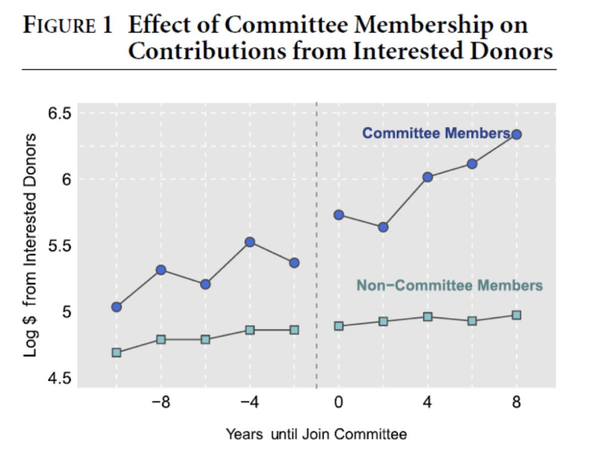
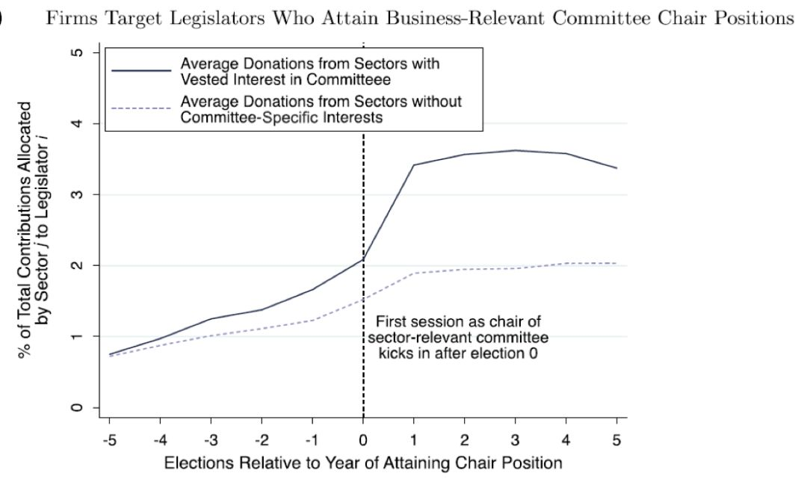
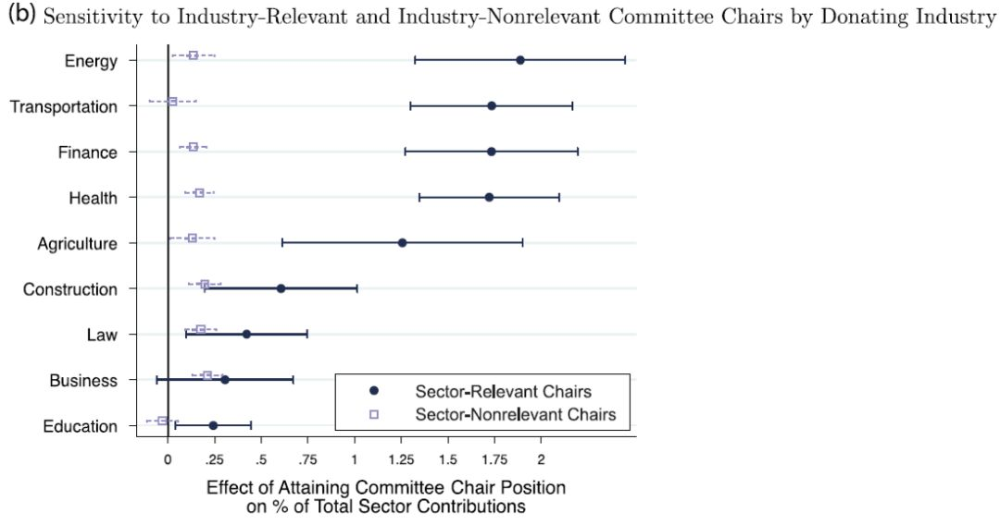

收录于合集
导语
American Journal of Political Science (AJPS) 2018年第1期已于近日出炉，昨天我们推送了《美国政治学杂志》2018年第1期的新刊速递（上），本次将推送该期新刊速递（中），对另外4篇论文加以摘报。下面是本期内容。
**题目： How the Public Defines Terrorism **
民众所理解的恐怖主义究竟是什么？
作者： Connor Huff （ Harvard University ）等人
恐怖主义是困扰人类社会的一个长期问题，因为它直接牵涉到——安全，这个最为基本的个人需求和群体需求，但如果我们仔细反思，一方面我们对恐怖主义的理解往往来自于官方、政府和政治学研究者。但我们很少问公众，他们所理解的恐怖主义究竟是什么？另一方面，安全的顾虑很容易会导致思维的简单。一个事件一旦被官方挂上“恐怖主义”的字眼，作为读者的我们便会不假思索的认为，这就是恐怖主义。
因此这意味着，要么，我们对恐怖主义的理解很大的排除了公众的态度，很可能导致我们错估了公众对恐怖主义的理解；要么反过来，公众对恐怖主义的理解也可能是碎片化的、盲目的、不足信的。究竟哪一种说法更可靠呢？
Huff因此提出了一个很有趣的问题，如果将一则恐怖主义事件的各个要素拆分，重新组合出一个假想的事件，但不向公众声称这个事件是否是恐怖主义，公众自己会独立判断出来吗？
这个有趣的问题有很直接的现实背景，长此以往，媒体（官方或非官方）是我们获得恐怖主义事件的窗口，因此，描述恐怖主义事件的语言、文字、材料和表达艺术都已经深刻的形成一种认知惯性，埋伏于公众心理。因此，公众的神经和认知背景实际上是被媒体等各种力量所操纵和引导。但是，公众是恐怖主义活动的直接对象，他们理应对恐怖主义有一种源自自我感知的认知。因此，破解公众心目中的恐怖主义密码，意义不言而喻。
Huff的这篇论文针对这一问题进行了深入的研究，它采用了联合实验法和机器学习技术，构建了一个1400人（随机抽取）的实验池，然后将媒体对恐怖主义事件的一般性通报分成一般性的七个。这七个要素分别包括恐暴方式、目标群体、行暴地点、伤亡情况、恐怖分子的个人形象、恐怖分子的组织形式以及恐怖分子的动机。Huff对每一种要素分别构建了一定的选项，因此，七个要素互相结合，可以形成成千上万种“事件”。
Huff首先让1400个实验对象随机阅读七种要素不同组合下的恐怖主义“事件报道”，阅读完后再问及他们“这是否是恐怖主义”，从而得到了一个关于恐怖主义定性的公众认知图式。之后结合机器学习和岭回归Lasso机器学习法对数据加以充分训练。
最终Huff得到若干发现：首先，施暴方式而言，爆炸相比枪击和绑架，更易被受访者视为恐怖主义活动。其次，伤亡人数1人还是10人对于受访者判断是否是恐怖主义的影响存在，但差别不是很大。再者，在受访者看来，地点的差异并不会改变自己对恐怖主义的判定；第四，在受访者看来，攻击目标的差异也不太会改变自己对恐怖主义的判定，第五，在受访者看来，恐怖主义的组织形式较大的影响自己对恐怖主义的判断，个人的独狼行为不太可能被他们定性为恐怖主义，多人的行动则往往被视为恐怖主义。第六，在受访者看来，恐怖分子的宗教身份对于是否是恐怖主义的判断有影响，但差别不是很大（因为众所周知的原因，这一点的具体差异请看原文）。
最后，数据显示，恐怖分子的动机是最为显著地一个判断点，在受访者看来，（1）针对国家打击的报复、（2）政治波动引起的恐暴、（3）憎恨、以及（4）个人泄愤这四点与恐怖主义动机的关系逐渐弱化。Huff认为，这或许由于受访者都是美国公民，因此，深知自己国家所领导反恐战争是引发报复的重要因素之一，而“憎恨”这个因素在受访者看来，也是恐怖主义的动机来源，但这一点在官方和学界对恐怖主义动机的定义上，却很少出现。因此，这是公众认知区别于官方认知的一个重要差异。
除此之外的研究发现还有很多，但Huff的研究提出了一个很好的可以进一步在比较政治研究中挖掘的问题，比如，对于欧洲各国，枪支与恐怖主义的关系非常紧密，但在美国，枪支则是司空见惯，因此与恐怖主义的联系大大弱化了。因此，在公众心中，恐怖主义究竟是什么，依旧是一个极为日常化、复杂化进而情景化的问题——尽管正式的、制度性的认知源源不断的传递给公众。对于各国政府而言，公众所理解的恐怖主义究竟是什么？或者“希望”是什么，都将是一个耐人寻味的问题，古有“关宁铁骑”，今有“马奇诺线”，或许公众的希望在很大程度上便是绝望。
**题目： How Do Interest Groups Seek Access to Committees? **
瞒天过海的游戏——利益集团如何打点政客
**题目： When Are Agenda Setters Valuable? **
为什么政治议程制定者如此吃香？
作者： Alexander Fouirnaies （ Harris School, University of Chicago ）等人
在本期中，AJPS收录了Fouirnaies两篇论文。这两篇前后衔接，都集中探讨了利益集团在美国的政治参与问题。AJPS近年来刊载了许多围绕利益集团所做的研究，这些研究将利益集团在政治事务中“长袖善舞”的现象作了大量的分析，但是Fouirnaies近期获得的两项调查却显示出耐人寻味的另一番景象。
首先，有95%左右的企业表示自己压根没有为任何候选人的竞选活动捐过一分钱，这还是最大限度排除了企业虚报或者选择性低估自身行为可能的数据结果。其次，通过对440000份美国各州近30年议会议员行为数据的调查，发现大多数利益集团（企业、商会）实际上投放了可观的资金，只不过花在政党选举、行政职位选举上的资金比例越发的少，那大部分资金流向哪里了呢？
Fouirnaies发现，大部分资金是通过间接方式投放给具体的立法议员个人，从而通过控制政治议程的方式来“隐匿”自己真正的立场和声音，悄无声息的遥控着政策的生生死死。据此，Fouirnaies认为，既有研究过分关注于利益集团直接操纵民主政治的现象，这不仅可能错判了利益集团操纵民主政治的逻辑，也很可能低估了利益集团操纵政治实践的强度和深度。
政治议程的设置是一门经久不衰的艺术，在当前日益极化的时代，老练的政客能够利用政治议程的设置来讨价还价，既可以作为烟雾弹迷惑公众，也可以作为绊脚石牵制对立党派。在 Fouirnaies看来，近年来围绕政治议程设置而开展的研究，大多都将政治议程视为政客的一种工具，但是决定政治议程设置的不仅仅是政客，实际上，利益团体对政治议程设置的影响丝毫不亚于政客自己。因此，Fouirnaies提出了一个问题，在涉关公共事务的议程中，利益团体究竟如何影响和干预立法领袖的意志？或者说，立法领袖究竟能够从利益团体中攫取多少“好处”？
将这个问题转化为实际的研究设计并不是一个轻松的工作，Fouirnaies搜集了1988-2012年期间、45000次各州立法会议的信息，调取了那些曾成功当选为议长或者专门委员会主席议员的信息（议长负责总体议程，专门委员会负责子领域议程），通过比较这些议员当选前后政治捐款的数量，从而推断他们当选后是否“答谢了”捐助他们的利益团体，而答谢的程度可以通过当选后政治捐款数量的增加与否以及增加的程度高低来判断。如果“政客的答谢令人满意”，利益团体的捐款会不断增加，而这种增加相比当选前的捐款，差距应该是显著的。因此，通过这个映射机制，便可以巧妙地观察美国二十五年来，利益集团是否极大的影响到了立法议程的设置——并且，是否从中成功的得到了好处。
但问题是，如何证明，利益集团对当选议员捐款金额的增加是由于该议员的“答谢”而不是其他因素呢？比如该利益集团的意识形态、当地的经济状况、企业的营商环境、捐款执法监督的严格性、联邦政府自上而下的压力等等，这些因素都可能影响利益集团捐款金额的变化。因此，就需要对模型进行处理，分离出由于“答谢”所导致的effect部分。Fouirnaies采取了双重差分法（difference- in-differences model），实际上就是构建了一个剔除固定效应的工具变量，这个工具变量能够将各种冗杂的影响因素囊括起来，从而成功将其控制，进而更加纯粹的观测当一个普通议员成为立法议长后，究竟会如何改变利益集团的捐助。



Fouirnaies研究发现，首先，在二十五年来，成为议程决策人的“价值”越发的水涨船高，数据显示，成为立法主席后所得到的捐助平均增加1.75%。这个数据看起来不起眼，但乘以基数后是非常可观的。其次，“官职”越大，所受捐助越高。再者，“衙门”越重要，所受捐助越多，比如能源类、交通类、金融类以及医疗类企业是捐助者中的“四大金刚”。Fouirnaies最后认为，既有研究极大地低估了利益集团对政治议程的影响力，虽然这种影响机制在Fouirnaies看来，还需要进一步廓清，但这份研究的“纪实意义”将深刻的反映政治生活的现实。
题目： Disloyal Brokers and Weak Parties
掮客倒戈？弱党政治下的合作与交易
作者： Lucas M.Novaes （ Institute for Advanced Study in Toulouse ）
后发国家政党政治的稳定与否，其必要条件往往包括政党的组织体系是否扎根社会、党派支持者的立场是否稳固，以及政党政治沟通与回应能力是否强大等。但对于民主政治尚未成熟的国家，政党在很多情况是由若干个精英简单扯出一面旗就建立起来，而难以在有限的时间内构建起系统性的民意基础和社会支持系统，更别说与支持者建立起直接的、深入的、组织化的沟通、联系和扩散机制。
因此，这种类型的国家往往出现两种政党政治局面，第一，政党具有很强的地域性，往往是一个地方一个党，因为地缘和血缘是成本低廉的民意勾连机制；第二，政党需要“购买”民意，这种购买的主要方式，就是通过邀请、聘请地方的政治、经济、文化精英（brokers），为政党拉选票，也就是说政党只要建立起地方一两个精英的合作，便相当于获得了这个地方的大部分选票。但现实是，这种机制有很大的风险及不确定性，精英的倒戈与逆向选择经常让政党在大选前突然性的丢失了大量选票。尤其是在政党林立的国家，地方精英的博弈优势变得更大，甚至可以单方面撕毁、欺诈与某一政党的合作协议，甚至自己随意组建或解散自己的党派，因此，政党政治的波动与变化无常便经常在这类国家出现。
那么，如果国家强制约束地方精英的政治行为，提高地方精英单方面撕毁契约的成本，是否能够缓解政党在大选支持中民意波动呢？Novaes对巴西近年来出现的“弱政党政治”以及“精英倒戈”现象开展了研究，他通过建立一个断点回归模型RD，将自变量设定为2000/2004/2008年三次议会选举中地方精英所支持党派的胜负变化，因变量设定为地方政治精英倒戈的概率，其他固定效应则通过双重差分方法加以控制，观察在2007年巴西颁布了约束地方精英倒戈的法案前后，地方精英的行为是否发生变化。从而判断国家对稳固政党竞争模式的尝试是否有效。
Novaes最终发现，不管如何调整断点处的带宽（阈值），结果都显示，地方精英在国家出台相关约束法案后，倒戈和背信弃义的现象都显著地减少，地方精英与政党的合作变得更加长久、深入及稳固。与此同时，密度检验的结果也说明，断点处不存在内生性的指派问题，这说明，地方精英受到国家制度干预的影响是普遍的、可信的。
尽管如此，Novaes认为地方精英的博弈能力依旧存在，而且，如果政党过分约束地方精英的博弈空间，实际上反过来不利于借助地方精英来实现政治动员。因此，政党政治动员的逻辑并不是简单线性的，实际上是在螺旋式的弹性框架内，与地方精英发生复杂的利益交换，从而逐渐形成自己的民意基础，政党的弱势可能带来竞选的失败，强势也会错失动员的资源，因此，对于一些后发国家，政党的动员能力很大程度取决于政党之于地方精英的博弈能力。
政观编辑部
感谢您支持学术公益
微信扫一扫赞赏作者 __赞赏
已喜欢，对作者说句悄悄话
取消 __
发送给作者
发送
最多40字，当前共字
上一页 1/3 下一页
长按二维码向我转账
感谢您支持学术公益
受苹果公司新规定影响，微信 iOS 版的赞赏功能被关闭，可通过二维码转账支持公众号。